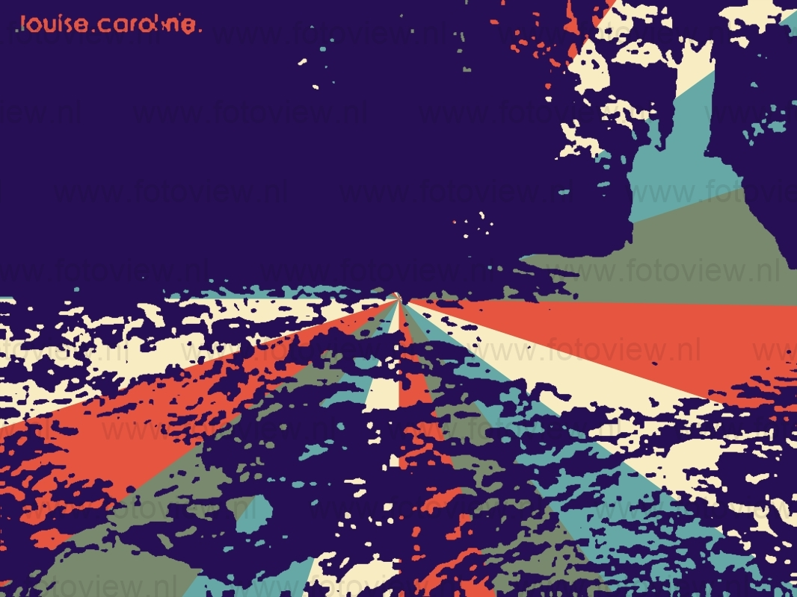
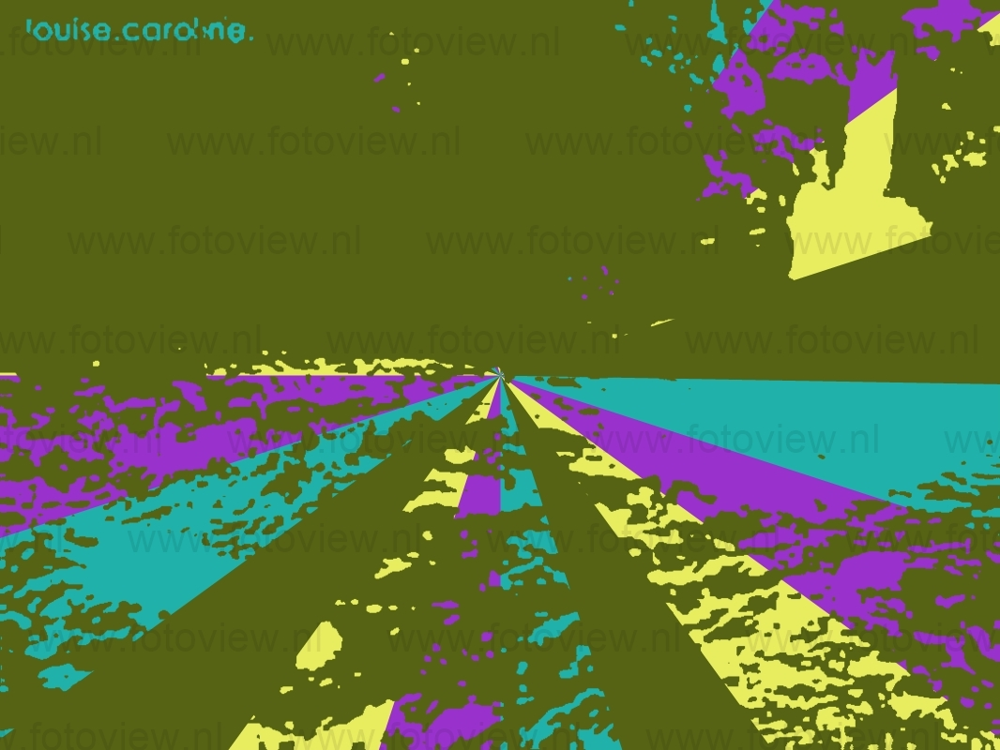
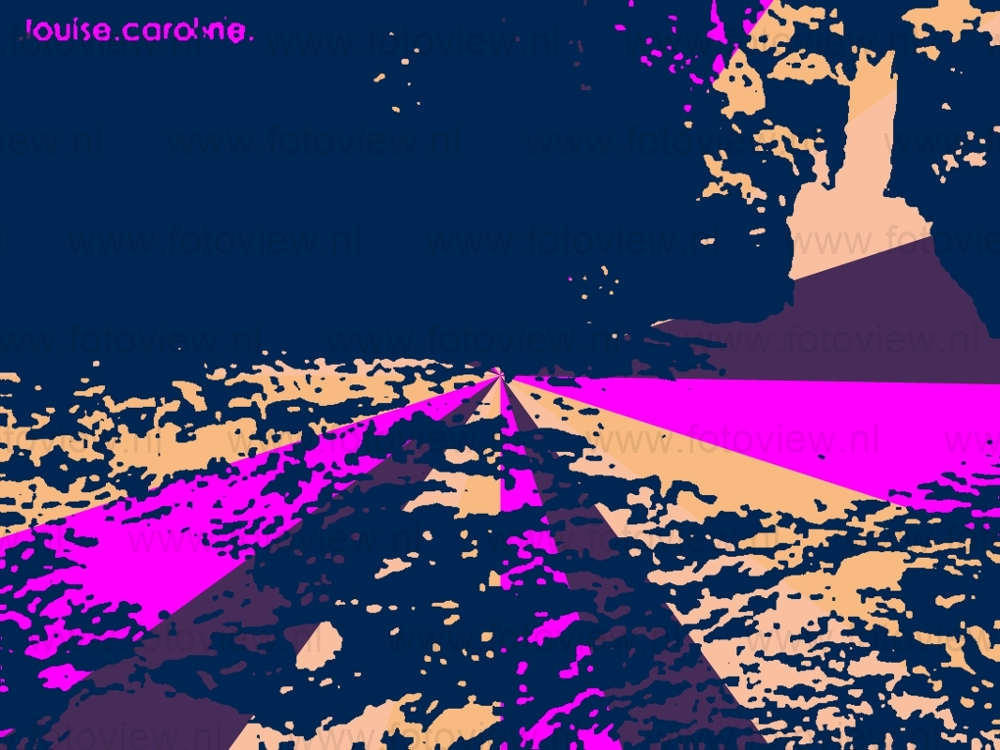

Cajati é um município da Região Geográfica Imediata de Registro, na Região Geográfica Intermediária de Sorocaba, no estado de São Paulo, no Brasil. Localiza-se a 24°44'09" de latitude sul, 48°07'22" de longitude oeste, a sudoeste da capital, distando desta cerca de 232 km, na porção paulista do vale do Ribeira. Situa-se entre 0 e 75 metros acima do nível do mar e seu clima é classificado como tropical chuvoso com inverno seco. Sua população foi estimada em 28 441 habitantes em 2019, e sua área é de 454 km² (62 hab./km²). Aproximadamente 73,0% da população mora na zona urbana. O município é formado somente pelo distrito sede, que inclui o povoado de Barra do Azeite.[7][8] Por volta do ano 1000, a região foi invadida por povos tupis-guaranis procedentes da Amazônia, que expulsaram os habitantes anteriores, falantes de línguas do tronco linguístico macro-jê, para o interior do continente. No século XVI, quando os primeiros europeus chegaram à região, a mesma era habitada pelos carijós.[9]
  